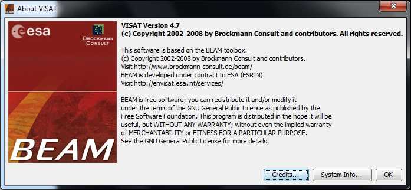

| The 'About VISAT' Window | |
Selecting the  About...
entry in the Help Menu brings up a window similar to the following image
About...
entry in the Help Menu brings up a window similar to the following image

This brings up a window which lists software and OS-specific properties in a table. You can mark entries with the mouse and copy the properties by using CTRL + C.